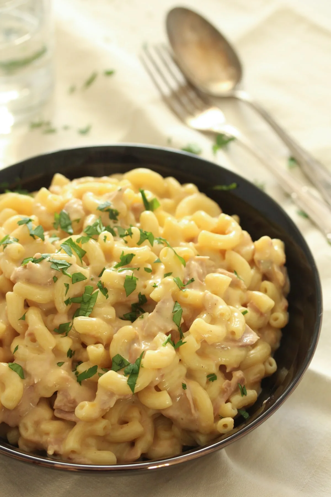

Tuna Mac and Cheese

Description
This creamy, saucy macaroni cheese recipe has a special little twist, tuna! It may sound strange at first but it's really just a extra-cheesy tuna pasta bake! It's so simple anybody could make it and with very little ingredients it makes a perfectly cheap dish too.
Difficulty: Easy
Serves: 2
Prep: 10mins
Cook: 10-15mins
Ingredients
- 350g pasta
- 200g cheddar cheese, grated
- 150g parmesan cheese, grated
- 2tbsp butter
- 1 clove garlic, crushed
- 1tsp mustard powder
- 3tbsp plain flour
- 200ml milk
- Breadcrumbs (optional)
Steps
- Bring pasta to boil.
- Cook pasta for 10 minutes or until soft.
- Strain pasta through colandar and leave it there.
- On a lower heat, add butter to the now empty pasta pot.
- Melt the butter and add the garlic, if it doesn't sizzle, turn up the heat slightly.
- Cook for a few minutes.
- Mix in the mustard powder.
- Add the flour and mix to form a roux.
- Cook for 2 minutes.
- Very slowly add the milk, constantly mixing it into the roux to gradually form a sauce.
- Turn up the heat and let the sauce simmer, stirring contantly, for 5 minutes or until it thickens.
- Add all cheese to the now thickened sauce.
- Add the pasta from the colander back into the pot and mix it in.
- Mix in your tuna and serve.
- TIP: For an extra crunch, put pasta into a baking dish, put breadcrumbs on top and put in the oven on 180c for 5 minutes!